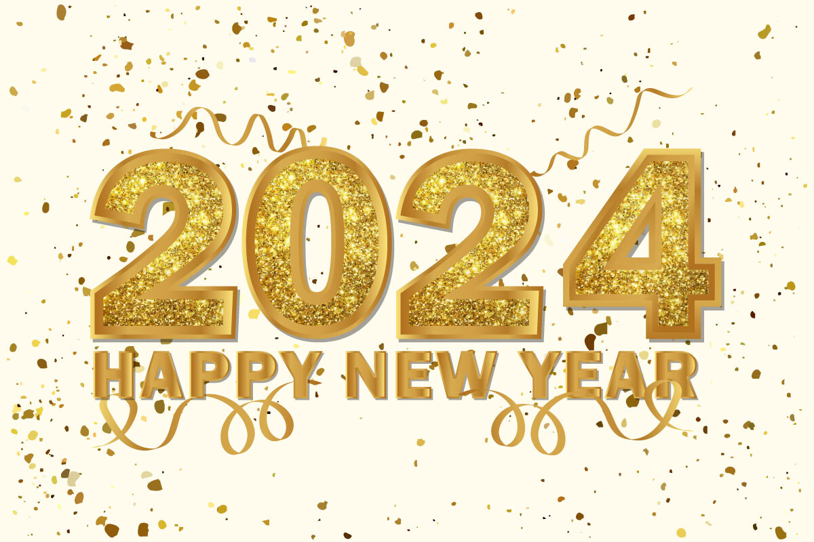

Accueil
Dernières annonces publiques
Journées portes ouvertes
Rendez-vous le Samedi 17 Février 2024 pour les premières journées portes ouvertes de l'année 2024. Venez découvrir l'IUT d'Aix-en-Provence et son Département Informatique ce jour là !
16/01/2024 15:40
Bonne année !
Nous souhaitons une merveilleuse année à tous nos étudiants et à tout notre personnel ! Que cette année 2024 soit une belle année de réussite pour tous !
01/01/2024 14:26
Ouverture de Parcoursup

C'est l'heure ! La phase de formulation des vœux a débuté sur Parcoursup ! Si vous vous intéressez à notre formation, n'hésitez pas à vous informer sur ce site. Pour rappel, vous avez un peu moins de 2 mois pour formuler tous vos vœux. Bonne chance à tous et au plaisir de vous rencontrer l'année prochaine !
12/11/2023 15:40
Informations
Coordonnées
- Adresse : 413 Av. Gaston Berger, 13100 Aix-en-Provence
- Téléphone : 04 42 93 90 43
- Email : iut-aix-rt@univ-amu.fr
Découvrir notre BUT Informatique
Découvrez les formations disponibles au sein de notre Département Informatique à travers cette vidéo réalisée à partir de témoignages.
Explorez celles-ci de manière plus approfondie dans la section associée du site.
Le bâtiment Informatique
Rez-de-chaussée
- Salles I-002 à I-010 disposant toutes d'ordinateurs
- Bureaux des secrétaires et de Mme Makssoud
- Chaises et écrans d'affichage
- Petit musée de l'Informatique
- Toilettes situées aux extrémités
1er étage
- Salles I-101 à I-111 dont certaines disposant d'ordinateurs
- Bureaux de Mr Anni, Mme Gaitan, Mme Morancey, Mme Jouini et Mr Flouvat
- Toilettes situées aux extrémités
2ème étage
- Salles I-201 à I-214 dont certaines disposant d'ordinateurs
- Bureaux de Mr Casali et Mr Lakhal
- Bureau du BDE (Bureau des Étudiants)
- Toilettes situées aux extrémités